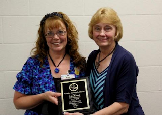

VIT Graduate
8/19/2012
 |
| Lisa Laird (Left) and Liz VonSeggen (right) The Elite Professional Ventriloquist award is the highest VIT Certification level. |
{kind=link}
From Lisa Laird:
Just wanted to share this picture with you. I started my training by borrowing the Maher Course from a friend, and then I began the Ventriloquists In Training (VIT) program. I never dreamed that I would end up traveling full-time in a 7 state area doing shows in libraries, schools, churches and other community events. I am blessed beyond belief and the smiles on the faces of the children in my audiences as well as the notes of encouragement are worth more than gold. Thanks for your part in helping me down this new path.
As a former teacher I feel I now have the best of both worlds, I still get to teach but get to provide entertainment and encouragement as I educate. (And I don't have all the paperwork that teachers have to deal with these days.)
Puppetry has been part of my family for years and my two sons, who are now grown, are still working with puppets professionally. My husband and I have directed a puppet team for years as well. Although we have been called "One wacky family" by many, we sure have fun!! I am thankful that God has allowed me this great adventure into "wackiness", I wouldn't trade it for anything!
As a former teacher I feel I now have the best of both worlds, I still get to teach but get to provide entertainment and encouragement as I educate. (And I don't have all the paperwork that teachers have to deal with these days.)
Puppetry has been part of my family for years and my two sons, who are now grown, are still working with puppets professionally. My husband and I have directed a puppet team for years as well. Although we have been called "One wacky family" by many, we sure have fun!! I am thankful that God has allowed me this great adventure into "wackiness", I wouldn't trade it for anything!
Thanks Clinton for all you have done for the world of ventriloquism!!
Lisa Laird and Pockets Full of Fun